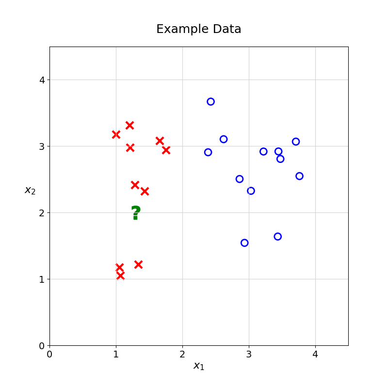
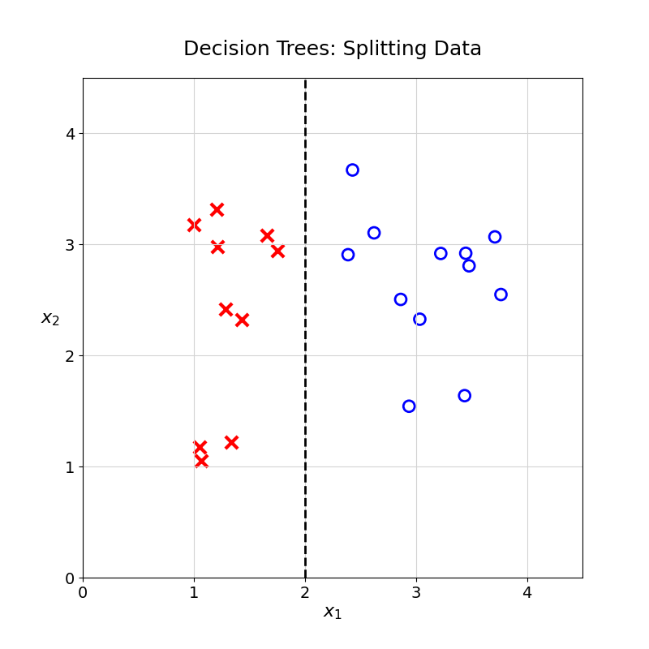
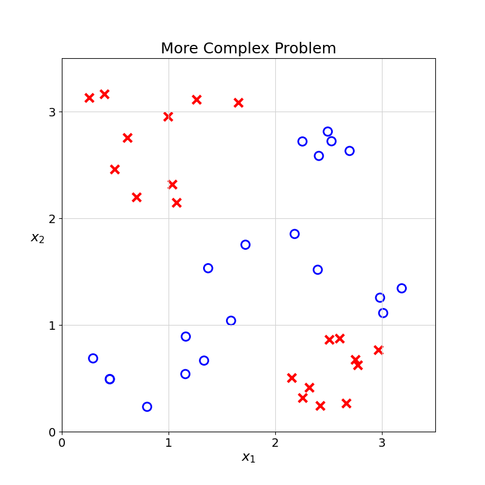
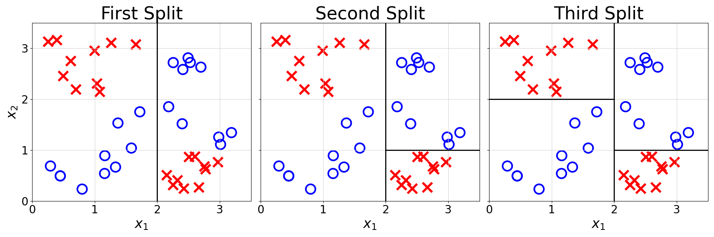
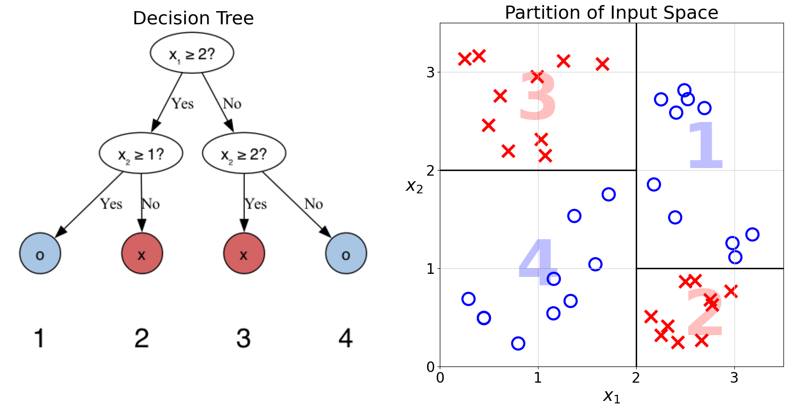
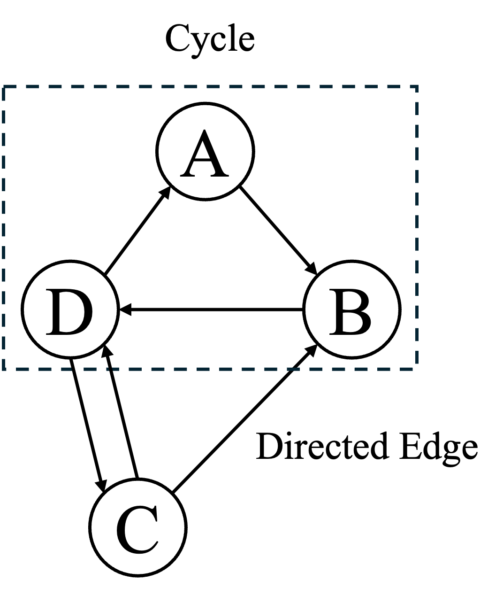
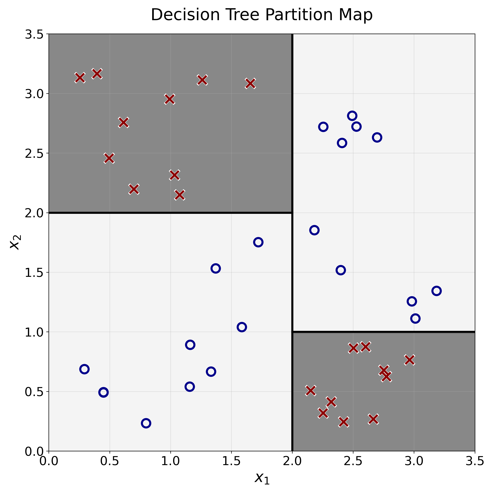

11 Decision Trees
It is now time to introduce a second model architecture. How would you predict the class of the unknown observation without using distance functions or nearest neighbours?

Figure code
import matplotlib.pyplot as plt
import numpy as np
fig, ax = plt.subplots(figsize=(8, 8))
ax.set_xticks(np.arange(0, 5, 1))
ax.set_yticks(np.arange(0, 5, 1))
ax.grid(True, linestyle='-', color='lightgrey', linewidth=0.8)
ax.set_xlim(0, 4.5)
ax.set_ylim(0, 4.5)
ax.set_xlabel('$x_1$', fontsize=16)
ax.set_ylabel('$x_2$', rotation=0, ha='right', fontsize=16)
ax.tick_params(axis='both', which='major', labelsize=14)
np.random.seed(0)
x1_plus = np.random.uniform(0.5, 1.8, 10)
x2_plus = np.random.uniform(1.0, 3.5, 10)
ax.scatter(x1_plus, x2_plus, marker='x', color='red', s=120, linewidths=3, label='Class x')
x1_circle = np.random.uniform(2.2, 3.8, 12)
x2_circle = np.random.uniform(1.5, 3.8, 12)
ax.scatter(x1_circle, x2_circle, marker='o', color='blue', s=100, facecolors='none', edgecolors='blue', linewidths=2, label='Class o')
plt.scatter(1.3, 2, marker=r'$\mathbf{?}$', color='green', s=400)
ax.set_title('Example Data', fontsize=18, pad=20)
plt.gca().set_aspect('equal', adjustable='box')
plt.savefig("images/trees/example_data.png")
plt.show()One possibility would be to split the data at \(x_1 = 2\). Any observation with \(x_1\) greater than \(2\) would be classified as \(\circ\); the rest would be classified as \(\times\).

Figure code
import matplotlib.pyplot as plt
import numpy as np
fig, ax = plt.subplots(figsize=(8, 8))
ax.set_xticks(np.arange(0, 5, 1))
ax.set_yticks(np.arange(0, 5, 1))
ax.grid(True, linestyle='-', color='lightgrey', linewidth=0.8)
ax.set_xlim(0, 4.5)
ax.set_ylim(0, 4.5)
ax.set_xlabel('$x_1$', fontsize=16)
ax.set_ylabel('$x_2$', rotation=0, ha='right', fontsize=16)
ax.tick_params(axis='both', which='major', labelsize=14)
np.random.seed(0)
x1_plus = np.random.uniform(0.5, 1.8, 10)
x2_plus = np.random.uniform(1.0, 3.5, 10)
ax.scatter(x1_plus, x2_plus, marker='+', color='red', s=120, linewidths=3)
x1_circle = np.random.uniform(2.2, 3.8, 12)
x2_circle = np.random.uniform(1.5, 3.8, 12)
ax.scatter(x1_circle, x2_circle, marker='o', color='blue', s=100, facecolors='none', edgecolors='blue', linewidths=2, label='Class O')
ax.plot([2, 2], [0, 4.5], color='black', linestyle='--', linewidth=2)
ax.set_title('Decision Trees: Splitting Data', fontsize=18, pad=20)
plt.gca().set_aspect('equal', adjustable='box')
plt.savefig("images/trees/split.png")
plt.show()11.1 Multiple Splits
For a more complex case, how would you predict the class of the unknown observation with this training data? How would you split the \(\times\) from the \(\circ\)?

Figure code
import matplotlib.pyplot as plt
import numpy as np
fig, ax = plt.subplots(figsize=(8, 8))
ax.set_xticks(np.arange(0, 4, 1))
ax.set_yticks(np.arange(0, 4, 1))
ax.grid(True, linestyle='-', color='lightgrey', linewidth=0.8)
ax.set_xlim(0, 3.5)
ax.set_ylim(0, 3.5)
ax.set_xlabel('$x_1$', fontsize=16)
ax.set_ylabel('$x_2$', rotation=0, ha='right', fontsize=16)
ax.tick_params(axis='both', which='major', labelsize=14)
np.random.seed(42)
x1_region1 = np.random.uniform(0.2, 1.8, 10)
x2_region1 = np.random.uniform(0.2, 1.8, 10)
ax.scatter(x1_region1, x2_region1, marker='o', color='blue', s=100, facecolors='none', edgecolors='blue', linewidths=2, label='Class O')
x1_region2 = np.random.uniform(2.1, 3.2, 10)
x2_region2 = np.random.uniform(0.2, 0.9, 10)
ax.scatter(x1_region2, x2_region2, marker='x', color='red', s=100, linewidths=3, label='Class X')
x1_region3 = np.random.uniform(0.2, 1.8, 10)
x2_region3 = np.random.uniform(2.1, 3.2, 10)
ax.scatter(x1_region3, x2_region3, marker='x', color='red', s=100, linewidths=3)
x1_region4 = np.random.uniform(2.1, 3.2, 10)
x2_region4 = np.random.uniform(1.1, 3.2, 10)
ax.scatter(x1_region4, x2_region4, marker='o', color='blue', s=100, facecolors='none', edgecolors='blue', linewidths=2)
ax.set_title('More Complex Problem', fontsize=18)
plt.gca().set_aspect('equal', adjustable='box')
plt.savefig("images/trees/complex_problem.png")
plt.show()In this example, there is no single line that can perfectly split the two groups. In Computer Science, this is also called the XOR problem.
XOR Problem
The XOR (Exclusive Or) Problem refers to a foundational Machine Learning and Computer Science problem in which two classes cannot be separated by any single straight line. It demonstrates the weaknesses of simple linear models.

Figure code
import matplotlib.pyplot as plt
import numpy as np
fig, ax = plt.subplots(figsize=(5, 5))
ax.set_xticks([0, 1])
ax.set_yticks([0, 1])
ax.set_xlim(-0.2, 1.2)
ax.set_ylim(-0.2, 1.2)
ax.grid(True, linestyle='-', color='lightgrey', linewidth=0.8)
# XOR points
points = np.array([[0,0],[0,1],[1,0],[1,1]])
labels = [0,1,1,0]
for pt, lbl in zip(points, labels):
if lbl == 0:
ax.scatter(pt[0], pt[1], marker='o', color='blue', s=120, edgecolor='blue', facecolors='none', linewidth=2)
else:
ax.scatter(pt[0], pt[1], marker='x', color='red', s=120, linewidths=3)
ax.set_xlabel('$x_1$', fontsize=16)
ax.set_ylabel('$x_2$', fontsize=16)
ax.set_title('XOR Problem', fontsize=18)
plt.xticks(fontsize=14)
plt.yticks(fontsize=14)
plt.savefig("images/trees/xor_problem.png")
plt.show()The XOR is a logical operation that takes two Boolean (True/False or 1/0) values as inputs and returns 1 (or True) if they are different and 0 or False otherwise. You can see the truth table for this operation below.
XOR Truth Table
| Input A | Input B | Output (A XOR B) |
|---|---|---|
| False | False | False |
| False | True | True |
| True | False | True |
| True | True | False |
More information on the XOR problem at (“Exclusive Or,” n.d.)
Instead of splitting the data once, what if you could split the data multiple times? An example is shown below:

Figure code
import matplotlib.pyplot as plt
import numpy as np
np.random.seed(42)
x1_region1 = np.random.uniform(0.2, 1.8, 10)
x2_region1 = np.random.uniform(0.2, 1.8, 10)
x1_region2 = np.random.uniform(2.1, 3.2, 10)
x2_region2 = np.random.uniform(0.2, 0.9, 10)
x1_region3 = np.random.uniform(0.2, 1.8, 10)
x2_region3 = np.random.uniform(2.1, 3.2, 10)
x1_region4 = np.random.uniform(2.1, 3.2, 10)
x2_region4 = np.random.uniform(1.1, 3.2, 10)
fig, axs = plt.subplots(1, 3, figsize=(18, 6), sharey=True)
splits = [
{'lines': [([2, 2], [0, 3.5])]},
{'lines': [([2, 2], [0, 3.5]), ([2, 3.5], [1, 1])]},
{'lines': [([2, 2], [0, 3.5]), ([2, 3.5], [1, 1]), ([0, 2], [2, 2])]}
]
titles = ['First Split', 'Second Split', 'Third Split']
for i, ax in enumerate(axs):
ax.set_xticks(np.arange(0, 4, 1))
ax.set_yticks(np.arange(0, 4, 1))
ax.set_xlim(0, 3.5)
ax.set_ylim(0, 3.5)
ax.grid(True, linestyle='-', color='lightgrey', linewidth=0.8)
ax.scatter(x1_region1, x2_region1, marker='o', color='blue', s=100, facecolors='none', edgecolors='blue', linewidths=2)
ax.scatter(x1_region2, x2_region2, marker='x', color='red', s=100, linewidths=3)
ax.scatter(x1_region3, x2_region3, marker='x', color='red', s=100, linewidths=3)
ax.scatter(x1_region4, x2_region4, marker='o', color='blue', s=100, facecolors='none', edgecolors='blue', linewidths=2)
for line in splits[i]['lines']:
ax.plot(line[0], line[1], color='black', linestyle='-', linewidth=2)
ax.set_title(titles[i], fontsize=18)
ax.set_xlabel('$x_1$', fontsize=16)
if i == 0:
ax.set_ylabel('$x_2$', fontsize=16)
ax.tick_params(axis='both', which='major', labelsize=14)
plt.tight_layout()
plt.savefig("images/trees/three_splits.png")
plt.show()11.2 From Splits to Predictions
Using these three splits, how could you classify a new observation?
One way to do so would be to go through the splits we did one by one:
- If \(x_1 \geq 2\):
- If \(x_2 \geq 1\): assign \(\circ\)
- Else: assign \(\times\)
- Else:
- If \(x_2 \geq 2\): assign \(\times\)
- Else: assign \(\circ\)
The observation is then assigned the label that is the majority in the resulting partition.
Exercise 11.1 Using the above list, generate predictions for the following observations:
- Observation 1: \(x_1 = 3,x_2 = 3\)
- Observation 2: \(x_1 = 1,x_2 = 3\)
- Observation 3: \(x_1 = 1,x_2 = 1\)
11.3 From Partition to Trees
The above list may be difficult to follow. This type of logic could be more elegantly represented as a tree (also called a decision tree):

Figure code
from graphviz import Digraph
dot = Digraph()
dot.attr(rankdir='TB', fontsize='16', fontname='Helvetica') # Top to bottom, Helvetica font
# Decision nodes (ovals)
dot.attr('node', shape='ellipse', fontname='Helvetica')
dot.node('A', 'x₁ ≥ 2?')
dot.node('B', 'x₂ ≥ 1?')
dot.node('C', 'x₂ ≥ 2?')
# Leaf nodes (circles)
dot.attr('node', shape='circle', style='filled', fillcolor="#D46363", fontname='Helvetica')
dot.node('E', 'x')
dot.node('F', 'x')
dot.attr('node', shape='circle', style='filled', fillcolor="#5B90C4", fontname='Helvetica')
dot.node('D', 'o')
dot.node('G', 'o')
with dot.subgraph() as s:
s.attr(rank='same')
s.node('D')
s.node('E')
s.node('F')
s.node('G')
s.edge('D', 'E', style='invis')
s.edge('E', 'F', style='invis')
s.edge('F', 'G', style='invis')
# Edges
dot.edge('A', 'B', 'Yes')
dot.edge('A', 'C', 'No')
dot.edge('B', 'D', 'Yes')
dot.edge('C', 'F', 'Yes')
dot.edge('B', 'E', 'No')
dot.edge('C', 'G', 'No')
# Render the graph
dot.render('images/trees/tree_example', format='png', cleanup=True)Exercise 11.2 Generate predictions for the following observations by going down the Decision Tree above:
- Observation 1: \(x_1 = 3,x_2 = 3\)
- Observation 2: \(x_1 = 1,x_2 = 3\)
- Observation 3: \(x_1 = 1,x_2 = 1\)
To better understand the relationship between trees and data splits, the tree and the partition can be visualised next to one another:

Figure code
import matplotlib.pyplot as plt
import numpy as np
from PIL import Image
from graphviz import Digraph
# 1. Create and render the Graphviz tree with leaf numbers BELOW the node
dot = Digraph()
dot.attr(rankdir='TB', fontsize='16', fontname='Helvetica')
dot.attr('node', shape='ellipse', fontname='Helvetica')
dot.node('A', 'x₁ ≥ 2?')
dot.node('B', 'x₂ ≥ 1?')
dot.node('C', 'x₂ ≥ 2?')
# Leaves: label is just the class, number is a separate node below
dot.attr('node', shape='circle', style='filled', fillcolor="#D46363", fontname='Helvetica')
dot.node('E', 'x')
dot.node('F', 'x')
dot.attr('node', shape='circle', style='filled', fillcolor="#5B90C4", fontname='Helvetica')
dot.node('D', 'o')
dot.node('G', 'o')
# Add invisible nodes for numbers below each leaf
dot.attr('node', shape='plaintext', fontname='Helvetica', fontsize='24', fillcolor='white')
dot.node('E_num', '2')
dot.node('F_num', '3')
dot.node('D_num', '1')
dot.node('G_num', '4')
# Position numbers below leaves using invisible edges
dot.edge('E', 'E_num', style='invis', weight='100')
dot.edge('F', 'F_num', style='invis', weight='100')
dot.edge('D', 'D_num', style='invis', weight='100')
dot.edge('G', 'G_num', style='invis', weight='100')
with dot.subgraph() as s:
s.attr(rank='same')
s.node('D')
s.node('E')
s.node('F')
s.node('G')
s.edge('D', 'E', style='invis')
s.edge('E', 'F', style='invis')
s.edge('F', 'G', style='invis')
with dot.subgraph() as s:
s.attr(rank='same')
s.node('D_num')
s.node('E_num')
s.node('F_num')
s.node('G_num')
s.edge('D_num', 'E_num', style='invis')
s.edge('E_num', 'F_num', style='invis')
s.edge('F_num', 'G_num', style='invis')
dot.edge('A', 'B', 'Yes')
dot.edge('A', 'C', 'No')
dot.edge('B', 'D', 'Yes')
dot.edge('B', 'E', 'No')
dot.edge('C', 'F', 'Yes')
dot.edge('C', 'G', 'No')
tree_img_name = 'images/trees/tree_numbered'
dot.render(tree_img_name, format='png', cleanup=True)
fig, axes = plt.subplots(1, 2, figsize=(15, 8))
# --- Tree plot ---
ax0 = axes[0]
ax0.axis('off')
tree_img = Image.open(tree_img_name + ".png")
ax0.imshow(tree_img)
ax0.set_title('Decision Tree', fontsize=18)
# --- Partition plot ---
ax1 = axes[1]
ax1.set_xticks(np.arange(0, 4, 1))
ax1.set_yticks(np.arange(0, 4, 1))
ax1.grid(True, linestyle='-', color='lightgrey', linewidth=0.8)
ax1.set_xlim(0, 3.5)
ax1.set_ylim(0, 3.5)
ax1.set_xlabel('$x_1$', fontsize=16)
ax1.set_ylabel('$x_2$', rotation=0, ha='right', fontsize=16)
ax1.tick_params(axis='both', which='major', labelsize=14)
np.random.seed(42)
x1_region1 = np.random.uniform(0.2, 1.8, 10)
x2_region1 = np.random.uniform(0.2, 1.8, 10)
ax1.scatter(x1_region1, x2_region1, marker='o', color='blue', s=100, facecolors='none', edgecolors='blue', linewidths=2, label='Class O')
x1_region2 = np.random.uniform(2.1, 3.2, 10)
x2_region2 = np.random.uniform(0.2, 0.9, 10)
ax1.scatter(x1_region2, x2_region2, marker='x', color='red', s=100, linewidths=3, label='Class X')
x1_region3 = np.random.uniform(0.2, 1.8, 10)
x2_region3 = np.random.uniform(2.1, 3.2, 10)
ax1.scatter(x1_region3, x2_region3, marker='x', color='red', s=100, linewidths=3)
x1_region4 = np.random.uniform(2.1, 3.2, 10)
x2_region4 = np.random.uniform(1.1, 3.2, 10)
ax1.scatter(x1_region4, x2_region4, marker='o', color='blue', s=100, facecolors='none', edgecolors='blue', linewidths=2)
# Partition lines
ax1.plot([2, 2], [0, 3.5], color='black', linestyle='-', linewidth=2)
ax1.plot([0, 2], [2, 2], color='black', linestyle='-', linewidth=2)
ax1.plot([2, 3.5], [1, 1], color='black', linestyle='-', linewidth=2)
ax1.set_title('Partition of Input Space', fontsize=18)
ax1.set_aspect('equal', adjustable='box')
# Overlay region numbers (matching tree leaves)
ax1.text(1, 2.7, '3', fontsize=90, color='red', alpha=0.15, ha='center', va='center', weight='bold')
ax1.text(1, 1, '4', fontsize=90, color='blue', alpha=0.15, ha='center', va='center', weight='bold')
ax1.text(2.7, 0.5, '2', fontsize=90, color='red', alpha=0.15, ha='center', va='center', weight='bold')
ax1.text(2.7, 2.2, '1', fontsize=90, color='blue', alpha=0.15, ha='center', va='center', weight='bold')
plt.tight_layout()
plt.savefig("images/trees/tree_numbered_partition.png")
plt.show()Each split or comparison creates a linear separation in the feature space, represented by a black line in the chart above.
In Computer Science, trees are a type of graph. Graphs are collections of nodes and edges.
Edges can be directed or undirected. Directed edges can only be traversed in one direction, usually represented as arrows. Edges, i.e., connections between nodes, can form cycles. These cycles are paths that start and end with the same node.

Exercise 11.3 The diagram above highlights the cycle A→B→D→A. Can you find another cycle?
Trees are Directed Acyclic Graphs (DAGs). This is a bit of a mouthful, let’s take these terms one by one:
- Directed: They flow from the root to the leaves
- Acyclic: They do not contain any cycles; there is only a single path from the root to each node
Below is an example of a tree with seven nodes:
Trees, like all graphs, are composed of nodes and edges. In addition to the usual graph jargon, there are a few tree-specific concepts. To understand them, consider the example above:
- Parent and child nodes: both connected by an edge (nodes B and D)
- Root node: The topmost node of a tree (node A)
- Leaf node: A node with no children (node G)
Exercise 11.4 Find another example of:
- Leaf node
- Parent node
11.4 From Trees to Maps
Just like the KNN model, Decision Trees build a map from the input features to the target variable. Using a Decision Tree to generate predictions for all possible feature values, we get the following map:

Figure code
import numpy as np
import matplotlib.pyplot as plt
from matplotlib.colors import ListedColormap
# Generate meshgrid
xx, yy = np.meshgrid(np.linspace(0, 3.5, 200), np.linspace(0, 3.5, 200))
Z = np.zeros_like(xx, dtype=int)
# Apply the tree rules
for i in range(xx.shape[0]):
for j in range(xx.shape[1]):
x1, x2 = xx[i, j], yy[i, j]
if x1 >= 2:
if x2 >= 1:
Z[i, j] = 0 # circle
else:
Z[i, j] = 1 # x
else:
if x2 >= 2:
Z[i, j] = 1 # x
else:
Z[i, j] = 0 # circle
cmap = ListedColormap(['#80C2FF', '#FF8080'])
plt.figure(figsize=(8, 8))
plt.contourf(xx, yy, Z, cmap=cmap, alpha=0.4)
# Overlay the data points
np.random.seed(42)
x1_region1 = np.random.uniform(0.2, 1.8, 10)
x2_region1 = np.random.uniform(0.2, 1.8, 10)
x1_region2 = np.random.uniform(2.1, 3.2, 10)
x2_region2 = np.random.uniform(0.2, 0.9, 10)
x1_region3 = np.random.uniform(0.2, 1.8, 10)
x2_region3 = np.random.uniform(2.1, 3.2, 10)
x1_region4 = np.random.uniform(2.1, 3.2, 10)
x2_region4 = np.random.uniform(1.1, 3.2, 10)
plt.scatter(x1_region1, x2_region1, marker='o', color='blue', s=100, facecolors='none', edgecolors='blue', linewidths=2)
plt.scatter(x1_region2, x2_region2, marker='x', color='red', s=100, linewidths=3)
plt.scatter(x1_region3, x2_region3, marker='x', color='red', s=100, linewidths=3)
plt.scatter(x1_region4, x2_region4, marker='o', color='blue', s=100, facecolors='none', edgecolors='blue', linewidths=2)
plt.plot([2, 2], [0, 3.5], color='black', linestyle='-', linewidth=2)
plt.plot([0, 2], [2, 2], color='black', linestyle='-', linewidth=2)
plt.plot([2, 3.5], [1, 1], color='black', linestyle='-', linewidth=2)
plt.xlabel('$x_1$', fontsize=16)
plt.ylabel('$x_2$', fontsize=16)
plt.title('Decision Tree Partition Map', fontsize=18)
plt.xticks(fontsize=14)
plt.yticks(fontsize=14)
plt.grid(True, alpha=0.3)
plt.savefig("images/trees/decision_tree_partition_map.png")
plt.show()11.5 Final Thoughts
That is it, we have built our first Decision Tree! We can use this model to predict any new observation based on its two features and position on the map above.
This is only a simple introduction to Decision Trees. The next chapters will explore the inner workings of this model family, starting with the evaluation of data splits. What makes a good split of a dataset?
11.6 Solutions
Solution 11.1. Exercise 11.1
- Observation 1: \(\circ\)
- Observation 2: \(\times\)
- Observation 3: \(\circ\)
Solution 11.2. Exercise 11.2
- Observation 1: \(\circ\)
- Observation 2: \(\times\)
- Observation 3: \(\circ\)
Solution 11.3. Exercise 11.3 There are many possible cycles, here are two examples:
- C→D→C
- C→B→D→C
Exercise 11.5 Solution. Exercise 11.5
- Leaf node: D, E, F, G
- Parent node: A, B, C